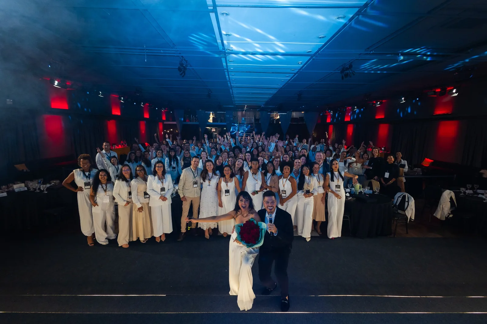
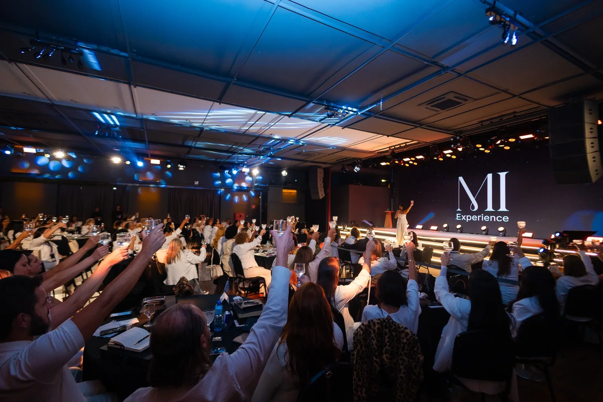
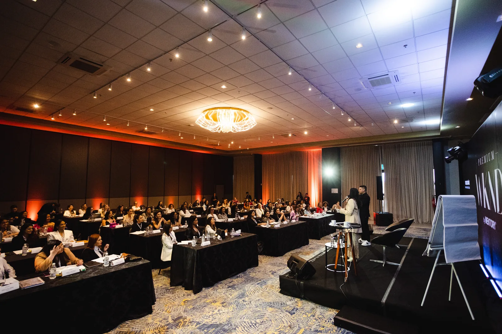
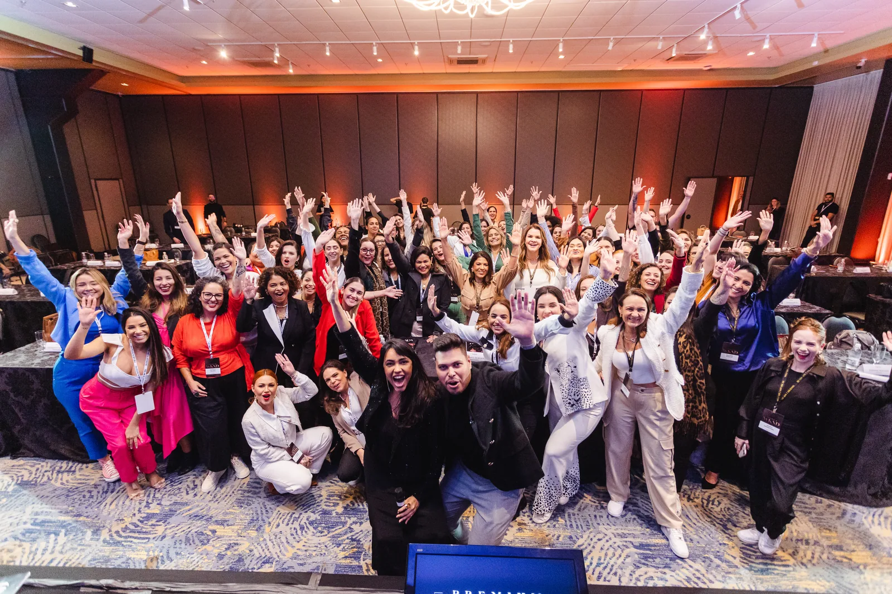
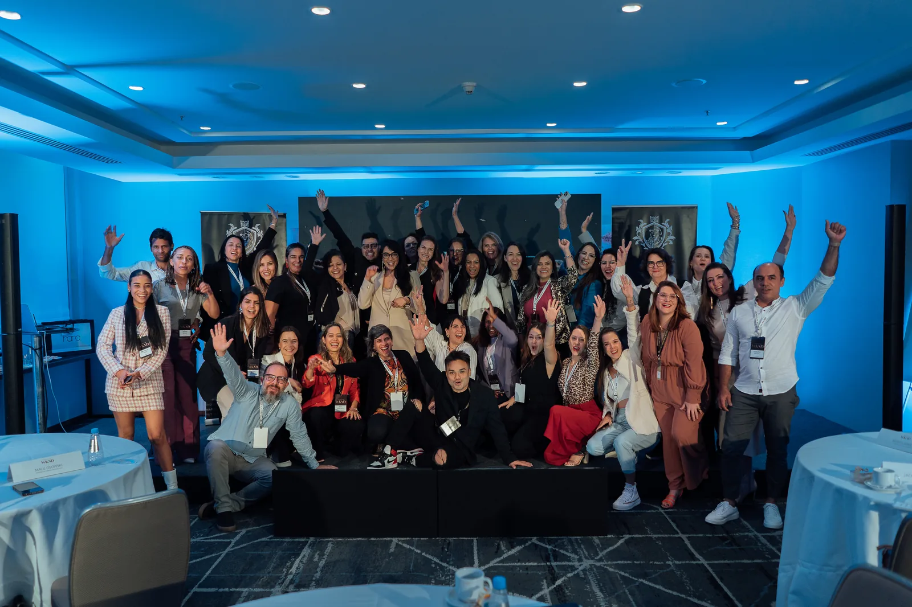
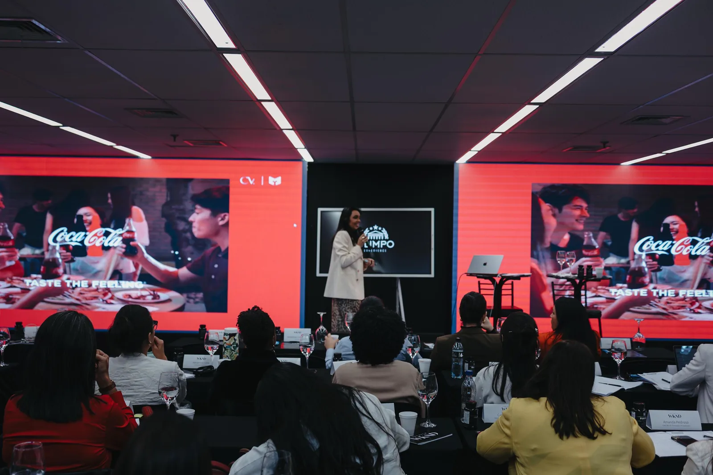
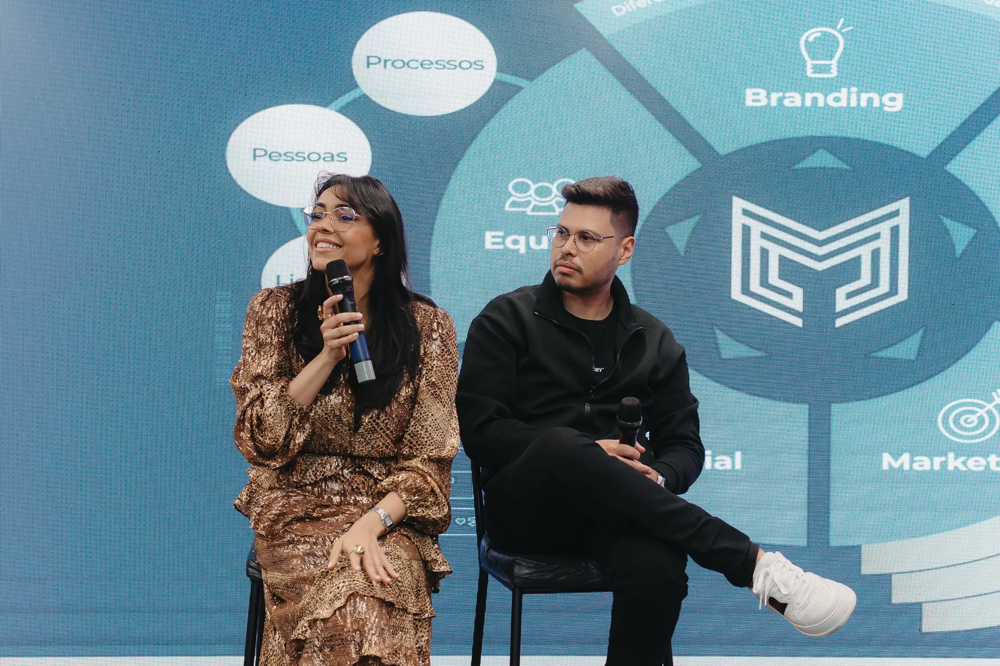
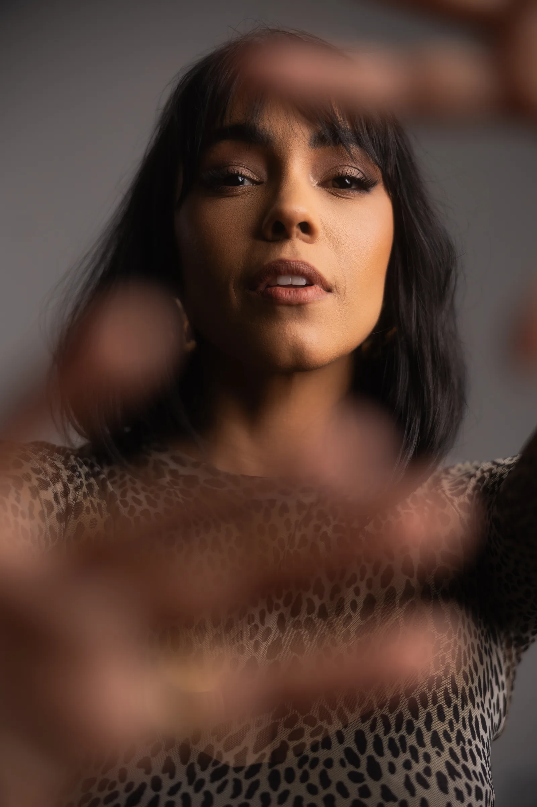

Destrave sua Marca Premium
Desejo, Imagem, Marca e Posicionamento. O início para sair da comunicação genérica e atrair atenção do cliente ideal.
Acessar agora ↗Marca pessoal, desejo e alto ticket para mulheres que querem parecer caras antes mesmo da oferta.
Aplicar para análise ↗Clara Do Vale cria marcas pessoais com presença magnética, narrativa proprietária e valor percebido alto.
O trabalho é cirúrgico: remover o ruído, escolher uma posição, construir uma estética e sustentar uma mensagem que faz o mercado entender rápido por que você custa mais.








Posicionamento não é uma bio bonita. É uma decisão pública sobre o lugar que você ocupa, a promessa que sustenta e o tipo de cliente que você permite chegar perto.
Desejo, Imagem, Marca e Posicionamento. O início para sair da comunicação genérica e atrair atenção do cliente ideal.
Acessar agora ↗Reposicionamento para mulheres que já têm entrega, mas ainda não parecem tão caras quanto são.
Aplicar agora ↗Nós construímos a sua marca e fazemos ela ser vista como a número 1 no seu mercado (apenas para empresas que faturaram 1M/ano).
Solicitar Análise ↗Definir o território que você quer dominar e o tipo de cliente que sua marca passa a atrair.
Transformar história, método e visão em uma mensagem reconhecível.
Construir presença, conteúdo e rituais de venda com intencionalidade para atrair clientes premium.
A Clara trabalha com mulheres que querem parar de comunicar como commodity e começar a liderar uma percepção de valor.

“Eu não espero o evento. Eu sou o evento.”
Clara Do ValeConteúdos selecionados para aprofundar marca, desejo e vendas premium.